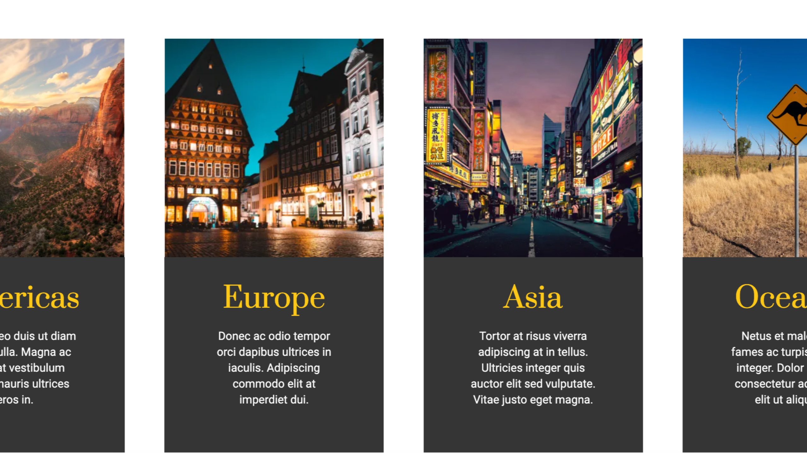
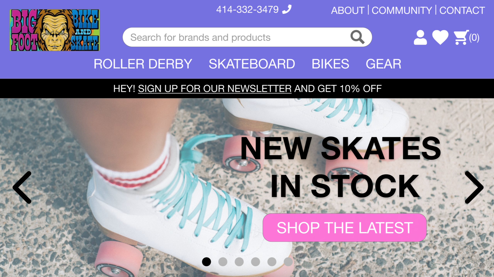
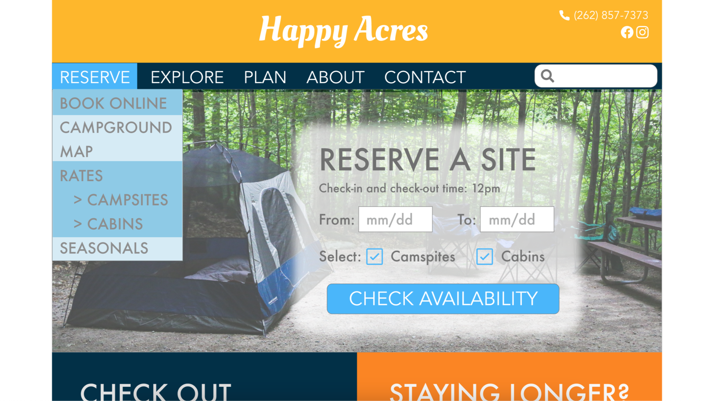

Work Samples

Travel Blog Redesign
Travel blog redesigned for a client using the Avada theme in WordPress (in progress).


Hapka Landscape Design
Redesign for a local landscaping company built using HTML, CSS and JavaScript.

Bigfoot Skate
E-commerce prototype for a local skate company using Adobe XD. Also see user research and wireframes

Happy Acres
Redesign for a local campground's website using Adobe XD. Also see user research/personas and sitemap/wireframes.